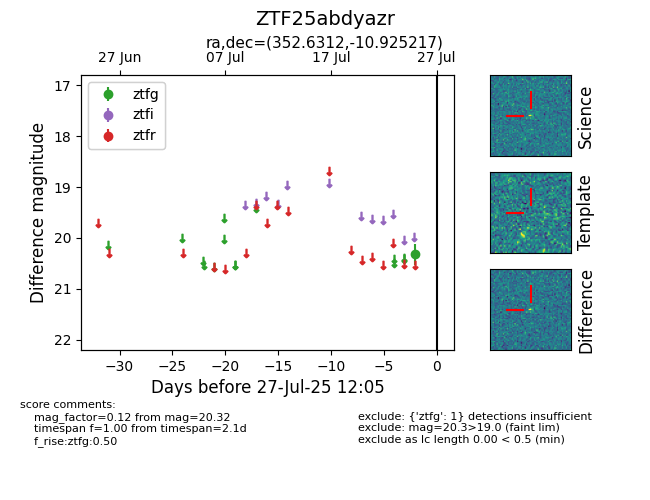

Target ZTF25abdyazr at 2025-07-27 12:05, see:
FINK: fink-portal.org/ZTF25abdyazr
Lasair: lasair-ztf.lsst.ac.uk/objects/ZTF25abdyazr
ALeRCE: alerce.online/object/ZTF25abdyazr
alt names
ZTF25abdyazr (ztf,fink)
coordinates:
equatorial (ra, dec) = (352.6312,-10.92522)
galactic (l, b) = (69.4553,-65.00999)
photometry
last ztfg=20.32
1 ztfg detections
